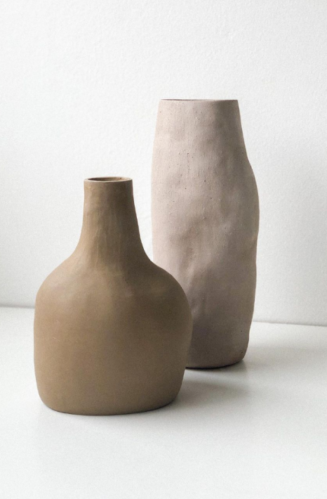

Crudo o fresco
En esta estapa la pasta está moldeable. Se puede teñir, estampar, dar textura, entre otros.
Luego de dejarlo una horas al aire libre, pero cubierto por algún plástico ...
Cuero
Deja de ser moldeable y tiene una estructura definida. Puedes pulirla, calarla, pintarla (con engobe), esgrafiarla, etc.

Luego de unos días al aire libre, pero igualmente tapado...
Hueso
La pasta está seca y frágil, de color más claro. Aún se puede pintar (con engobe), pero se seca al instante.


Ahora pasaos al horno, normalente a esta horneada se le llama "Bizcocheado" y se hace a 980 / 1060 c°
Bizcocho
Está rígido, no moldeable y poroso. Está listo para esmaltar, o pintar con engobes y esmaltar por encima
Nuevamente al horno. Esta horneada se conoce como vidreado y la temperatura va a depender de la pasta que estemos utilizando.
Pieza Esmaltada
Pieza Esmaltada
Estado final. Pieza lista para su uso